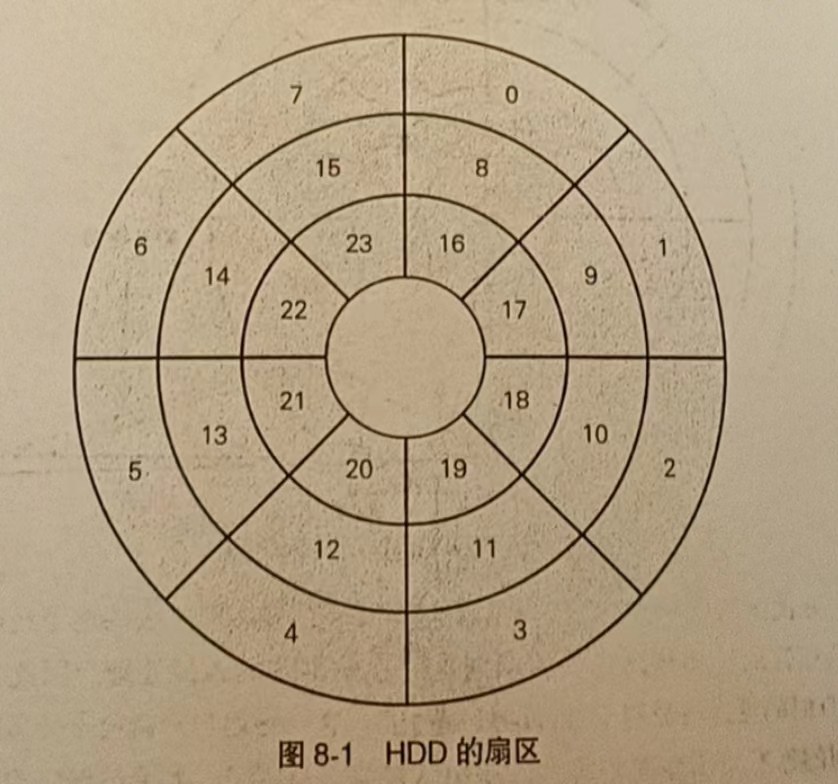

Linux
1. 计算机系统运行
① 通过输入设备或网络适配器，向计算机发起请求。
② 读取内存中的命令，并在CPU上执行，把结果写入负责保存数据的内存区域中。
③ 将内存中的数据写入HDD（Hard Disk Drive，硬盘驱动器）、SDD（Solid State Disk，固态硬盘）等存储器，或者通过网络发送给其他计算机，或者通过输出设备提供给用户。
④回到步骤①。
1.1 程序的分类
-
应用程序：能让用户直接使用，为用户提供帮助的程序，例如计算机上的办公软件、智能手机和平板电脑上的应用
-
中间件：将对大部分应用程序通用的功能分离出来，以辅助应用程序运行的程序，例如Web服务器、数据库系统
- OS：直接控制硬件设备，同时为应用程序与中间件提供运行环境的程序，例如Linux
2. 用户模式
2.1 系统调用
●进程控制（创建和删除）
●内存管理（分配和释放）
●进程间通信
●网络管理
●文件系统操作
●文件操作（访问设备）
3. 进程管理
3.1 创建进程
- 将同一个程序分成多个进程处理
- 创建另一个程序
3.2 fork 函数
- 基于发起调用的进程，创建一个新的进程
3.3 结束进程
- _exit() 函数
- C 标准库exit()函数
4. 进程调度器
4.1 调度器
-
一个 CPU 同时只运行一个进程
-
在同时运行多个进程时，每个进程都会获得适当的时长，轮流在 CPU 上执行处理
4.2 上下文切换
- 存在两个进程时，在消耗完一个时间片后进行上下文切换
4.3 进程状态
| 状态名 | 含义 |
|---|---|
| 运行态 | 正在逻辑CPU上运行 |
| 就绪态 | 进程具备运行条件，等待分配CPU时间 |
| 睡眠态 | 进程不准备运行，除非发生某事件。在此期间不消耗CPU时间 |
| 僵死状态 | 进程运行结束，正在等待父进程将其回收 |
4.4 吞吐量与延迟
- 吞吐量：单位时间内的总工作量，越大越好
- 延迟：各种处理从开始到完成所耗费的时间，越短越好
- 吞吐量=处理完成的进程数量/耗费的时间
- 延迟=结束处理的时间 — 开始处理的时间
4.5 运行进程
- 对于多核CPU的计算机来说，只有同时运行多个进程才能提高吞吐量，“有n个核心就有n倍性能”这种说法，说到底也只存在于理想状态中
- 与只有单个逻辑CPU时一样，当进程数量多于逻辑CPU数量时，吞吐量就不会再提高
4.6 运行时间和执行时间
-
运行时间 : 进程从开始运行到运行结束为止所经过的时间。类似于利用秒表从开始运行的时间点开始计时,一直测量到运行结束
-
执行时间:进程实际占用逻辑CPU的时长
5. 内存管理
5.1 free 命令
- 获取内存信息
5.2 相关字段
- total 字段:系统搭载的物理内存总量。
- free 字段:表面上的可用内存量 ( 详情请参考下面的 available 字段的说明 )
- buff/cache 宇段：缓冲区缓存与页面缓存 ( 详见第6章 ) 占用的内存。当系统的可用内存量 ( free 字段的值）减少时，可通过内核将它们释放出来
- available 字段：实际的可用内存量。本字段的值为 free 字段的值加上当内存不足时内核中可释放的内存量。
"可释放的内存"指缓冲区缓存与页面缓存中的大部分内存，以及内核中除此以外的用于其他地方的部分内存
5.3 内存分配时机
- 在创建进程时
- 在创建完进程后，动态分配内存时
5.4 存在问题
- 内存碎片化
- 访问用于其他用途的内存区域
- 难以执行多任务
5.5 虚拟内存
- 简而言之，
虚拟内存使进程无法直接访问系统上搭载的内存，取而代 之的是通过虚拟地址间接访问。进程可以看见的是虚拟地址，系统上搭载 的内存的实际地址称为 物理地址。此外，可以通过地址访问的范围称为 地址空间
5.6 页表
- 通过保存在内核使用的内存中的页表，可以完成从虚拟地址到物理地址的转换。在虚拟内存中，所有内存以页为单位划分并进行管理，地址转换也以页为单位进行。在页表中，一个页面对应的数据条目称为页表项。页面大小取决于CPU架构。在x86 64架构中，页面大小为4KB
6. 存储层次
6.1 高速缓存
-
高速缓存的存在， 正是为了抹平寄存器与内存之间的性能差距。从高速缓存到寄存器的访问速度比从内存到寄存器的访问速度快了几倍甚至几十倍，利用这一点， 即可提高流程①和流程③的处理速度。高速缓存通常内置于CPU 内， 但也存在位于CPU外的类型。
-
在从内存往寄存器读取数据时，数据先被送往高速缓存，再被送往寄存器。所读取的数据的大小取决于缓存块大小(cache line size)的值，该值由各个 CPU 规定。
6.2 访问局部性
- 时间局部性： 在某一时间点被访问过的数据， 有很大的可能性在不久的将来会再次被访问，例如循环处理中的代码段
- 空间局部性： 在某一时间点访问过某个数据后，有很大的可能性会继续访问其附近的其他数据， 例如遍历数组元素
6.3 页面缓存
- 将外部存储器上的文件数据缓存到内核上。以页为单位处理数据
6.4 缓冲区缓存
- 缓冲区缓存是与页面缓存相似的机制。这是当跳过文件系统，通过设备文件直接访问外部存储器时使用的区域。关于设备文件的内容，我们将在下一章介绍。大致上，页面缓存与缓冲区缓存可以概括为“用于将外部存储器中的数据放到内存上的机制”。
6.5 超线程
- 允许在每个内核上运行多个线程。更多的线程意味着可以并行完成更多的工作。线程技术处于激活状态时，CPU 会在每个物理内核上公开两个执行上下文。这意味着，一个物理内核现在就像两个“逻辑内核”一样，可以处理不同的软件线程。
7. 文件系统
7.1 统一系统调用
- 创建与删除文件:create()、unlink()
- 打开与关闭文件:open()、close()
- 从已打开的文件中读取数据:read()
- 往已打开的文件中写入数据:write()
- 将已打开的文件移动到指定位置: lseek()
- 除了以上这些操作以外的依赖于文件系统的特殊处理:ioctl()
7.2 流程
①执行内核中的全部文件系统通用的处理，并判断作为操作对象的文件保存在哪个文件系统上。
②调用文件系统专有的处理，并执行与请求的系统调用对应的处理。
③在读写数据时，调用设备驱动程序执行操作。
④由设备驱动程序执行数据的读写操作。
7.3 日志
- 日志功能在文件系统中提供了一个名为日志区域的特殊区域。日志区域是用户无法识别的元数据。
- 文件系统的更新按照以下步骤进行。
- 把更新所需的原子操作的概要暂时写入日志区域，这里的“概要”就称为日志。
- 基于日志区域中的内容，进行文件系统的更新
7.4 设备文件
- 字符设备
- 终端
- 键盘
-
鼠标
-
块设备
- 诀设备除了能执行普通的读写操作以外、还能进行随机访问，比较具有代表性的块设备是HDD与 SSD 等外部存储器。只需像读写文件一样读与亏央没备的数据，即可访问外部存储器中指定的数据。
7.5 以下几种情况下，需要直接操作块设备
- 更新分区表(利用parted 命令等)
- 块设备级别的数据备份与还原(利用dd命等]
- 创建文件系统(利用各文件系统的mkfs 命令等)
- 挂载文件系统(利用mount 命令等)
- fsck
8. 外部存储器
8.1 HDD
- HDD 用磁性信息表示数据，并将这些磁性数据记录在被称为盘片(platter)的磁盘上。HDD 读写数据的单位是扇区,而非字节。在 HDD的盘片上，沿半径方向与圆周方向划分出了多个扇区，并为每个扇区分配了序列号，如图 8-1所示。
HDD的扇区

8.2 HDD 数据传输流程
- 设备驱动程序将读写数据所需的信息传递给 HDD，其中包含扇区序列号、扇区数量以及访问类型(读取或写入)等信息。
- 通过摆动磁头摆臂并转动盘片，将磁头对准需要访问的扇区。
- 执行数据读写操作。
- 在执行读取的情况下，执行完 HDD 的读取处理就能结束数据传输。
8.3 I/O调度器
- 合并:将访问连续扇区的多个 I/O 请求合并为一个请求
- 排序:按照扇区的序列号对访问不连续的扇区的多个I/0请求进行
8.4 SSD
- 与HDD 最大的不同是，在访问SSD上的数据时，不会发生任何机械处理，只需执行电子处理即可完成访问。
8.5 注意
- 1. 尽量将文件中的数据存放在连续的或者相近的区域 2. 把针对连续区域的访问请求汇集到一次访问请求中。3. 对于文件，尽量以顺序访问的方式访问尽可能大的数据量